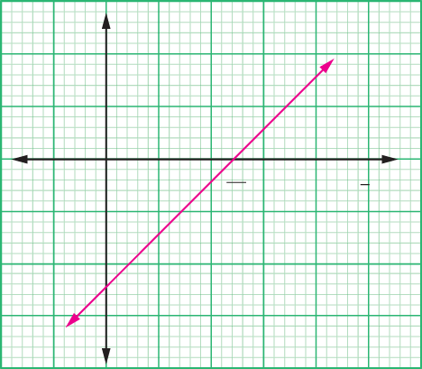

Suppose the switch is closed as shown in Figure 2.19 (b), current, , flows through the circuit. From Ohm’s law, the p.d, , across the resistor, , is given by,
The potential drop () caused by the cell’s internal resistance is given by,
The total voltage in the circuit is the sum of the potential drop due to the cell’s internal resistance and that of the resistor, . That is,
When no current is drawn in the circuit, e.m.f is equal to p.d across the cell . Generally, the total e.m.f of the cell (s) is given by,
The equation can be used to determine the internal resistance of a cell and the e.m.f of the cell experimentally. From Figure 2.19, different values can be used to give different values of current, , and the two sets of values are plotted as shown in Figure 20.20 based on the equation:
With in the vertical axis and the reciprocal of current in the horizontal axis.

The numerical value of e.m.f and can be determined from the graph. The slope of the graph represents the value of e.m.f, , and the vertical intercept represents the value of internal resistance, , of the cell. Similarly, when the axes of the variables are interchanged, the equation becomes:
Therefore, the slope of this graph (Figure 2.21) represents the reciprocal of the cell’s e.m.f, and the vertical intercept represents the product of the slope and the cell’s internal resistance.